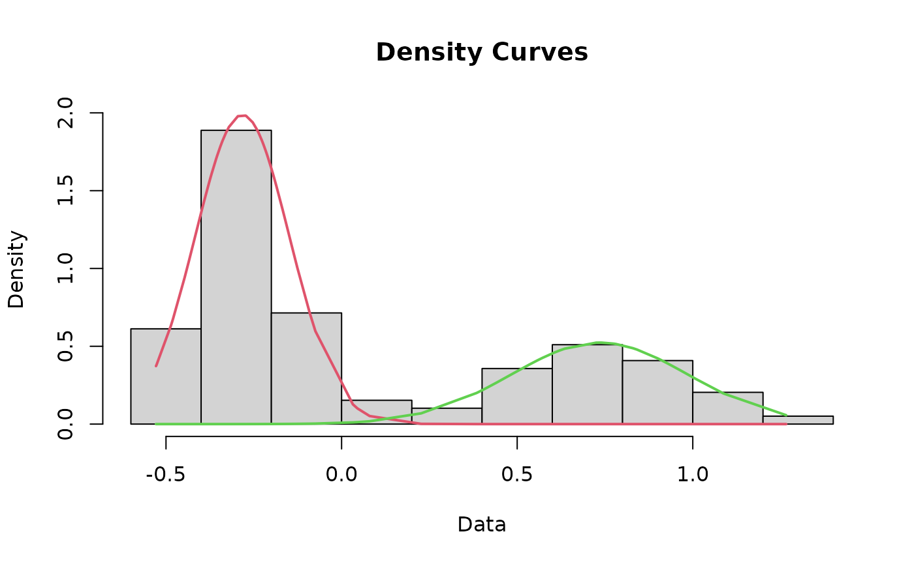
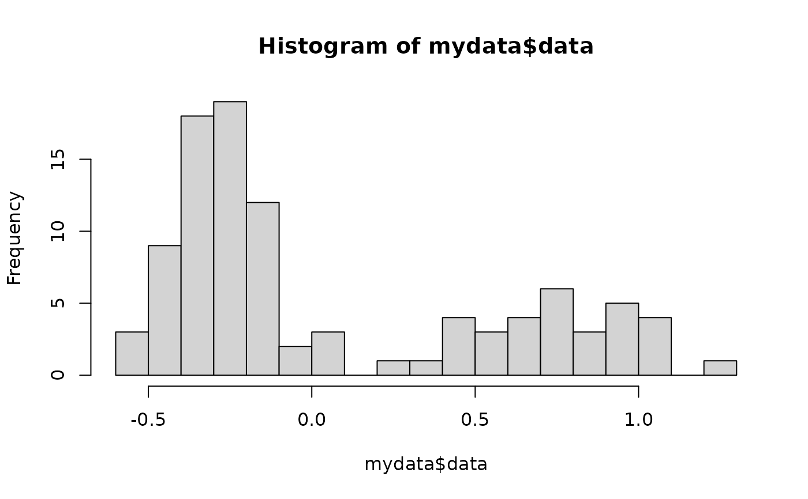

fitparams.RdThis function produces a histogram of the data that will be used for fitting curves. As a matter of course, this function runs the cleanData and datamodel functions for you, negating the need to run those separately.
fitparams(rawdata, breaks = 15)Returns a basic histogram for the data set along with various parameters used to generate curves for the final plot.
fit <- fitparams(rawdata)
#> number of iterations= 134

